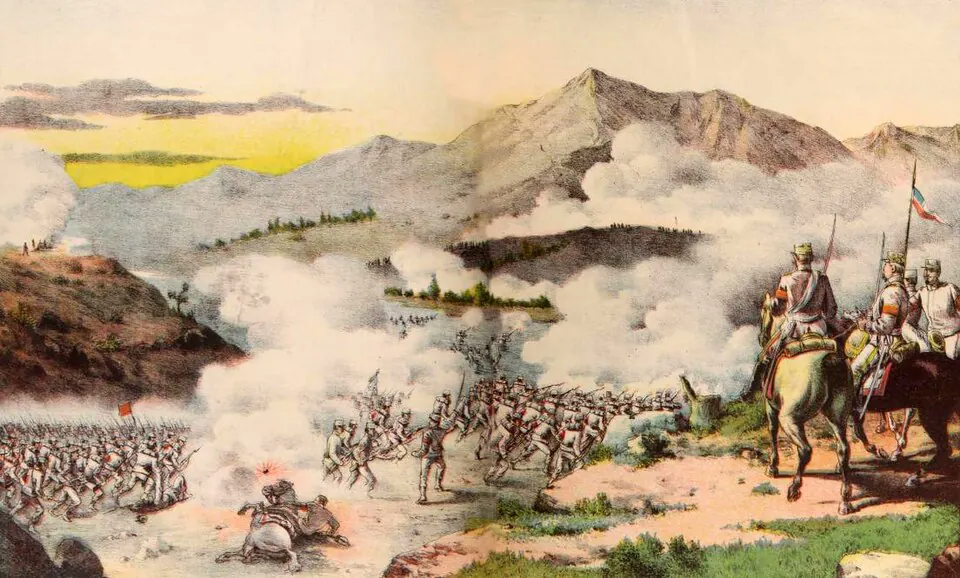

Guerra Civil de 1891

El conflicto enfrentó al presidente José Manuel Balmaceda con la mayoría del Congreso, que reclamaba control sobre los ministros y el gasto público y acusaba al Ejecutivo de intervenir en las elecciones. Al no aprobarse la ley de presupuestos para 1891, Balmaceda declaró vigente la del año anterior, lo que el Congreso consideró inconstitucional. El 7 de enero de 1891 la Escuadra, al mando de Jorge Montt, se sublevó en apoyo del Congreso, mientras el Ejército se mantuvo mayoritariamente leal al presidente.
Los congresistas se trasladaron al norte, controlaron Iquique y la riqueza del salitre, y formaron allí una Junta de Gobierno. En agosto desembarcaron cerca de Valparaíso y vencieron en las batallas de Concón y Placilla. Hubo también hechos de represión, como la matanza de Lo Cañas, cometida por fuerzas gobiernistas. Balmaceda se asiló en la legación argentina y se suicidó el 19 de septiembre de 1891, al día siguiente del término legal de su mandato.
Para algunos historiadores, como Hernán Ramírez Necochea, Balmaceda defendió el salitre frente al capital británico; otros, como Harold Blakemore, enfatizan la disputa institucional entre presidente y Congreso. El triunfo congresista inauguró la República Parlamentaria.
Versión para niños
En 1891, el presidente José Manuel Balmaceda y el Congreso tuvieron un conflicto muy grave. El Congreso pensaba que el presidente tenía demasiado poder y no aprobó el dinero para gobernar ese año. Balmaceda decidió gobernar igual. La Marina apoyó al Congreso y gran parte del Ejército apoyó al presidente. Así comenzó una guerra civil, es decir, una guerra entre chilenos. Duró ocho meses y murió mucha gente. Ganó el bando del Congreso, después de batallas cerca de Valparaíso.
Para maestros
Nivel sugerido: 1° medio
Objetivo: Explicar las causas, el desarrollo y las consecuencias de la Guerra Civil de 1891, contrastando interpretaciones historiográficas sobre el conflicto.
Preguntas para la clase:
- ¿Qué poderes del Estado estaban en disputa en 1891?
- ¿Por qué el control del salitre fue decisivo para el bando congresista?
- ¿Fue Balmaceda un presidente autoritario o un defensor del interés nacional? ¿Qué argumentos sostienen cada visión?
Actividad (20–30 min): Los estudiantes leen dos interpretaciones breves sobre la guerra (una económica y otra político-institucional) y un fragmento del testamento político de Balmaceda. En parejas identifican los argumentos y evidencias de cada interpretación y escriben una conclusión propia.
Fuentes sugeridas: Memoria Chilena; Biblioteca Nacional Digital; Museo Histórico Nacional; Biblioteca del Congreso Nacional (BCN).
Objetivos de Aprendizaje (Currículum Nacional)
- 6° básico · HI06 OA 03 Describir algunos hitos y procesos … el impacto de las reformas realizadas por los liberales en la segunda mitad del siglo XIX
- 1° medio · HI1M OA 09 Caracterizar la consolidación de la República en Chile … el debate sobre las atribuciones del Ejecutivo y del Legislativo
- 1° medio · HI1M OA 16 Analizar el orden político liberal y parlamentario de la segunda mitad del siglo XIX … el aumento de las facultades del poder legislativo
Personajes
Revisión humana pendiente. Cómo se revisa · Reportar un error
Cómo citar: Historia de Chile. (2026). Guerra Civil de 1891. En Historia de Chile: atlas y línea de tiempo. https://moises-salgado.github.io/historia-de-chile/momento/guerra-civil-de-1891.html